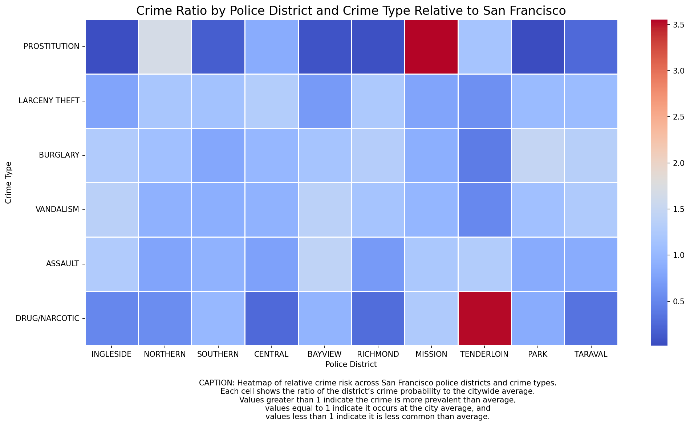

About this project
This data story explores crime patterns in San Francisco using visual analytics. We examine how crime varies over time, across districts, and by type.
When does crime happen?
Crime patterns vary throughout the day. Explore how incidents are distributed across hours using the interactive visualization.
Explore hourly crime patterns →Yearly trends
Crime levels have changed over time, reflecting broader social and economic shifts.

Where does crime concentrate?
Crime is not evenly distributed across the city. Some districts show higher concentrations for specific crime types.

Key insights
- Certain crimes are strongly time-dependent
- Districts exhibit distinct crime profiles
- Not all crime trends follow the same trajectory over time